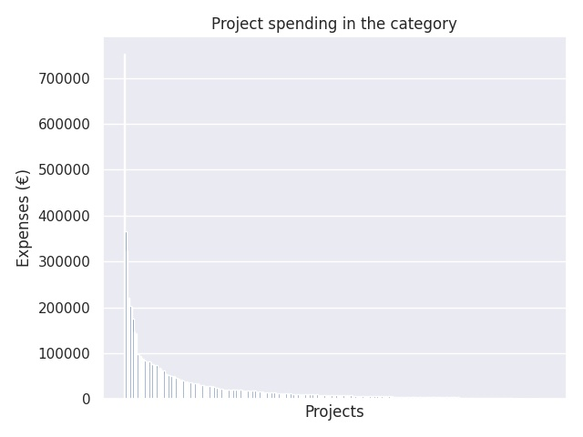

Kärkihanke 1 - hakuryhmä 2: Tutoropettajien toiminta
Category summary
25.1K spent on average
752K highest spending

Reports in the category
Helsingin kaupungin opetusvirasto
Project name: Helsingin tutoropettajatoiminta
752K spent
Espoon kaupunki
Project name: Uusi espoolainen peruskoulu
366K spent
Vantaan kaupunki
Project name: Tutoropettajien toiminta
324K spent
Tampereen kaupunki, Vapeha,
Project name: Ilmiömäinen Tampere - tutoropettajat
220K spent
Jyväskylän kaupunki
Project name: Jyväskylän tutoropettajien toiminta
203K spent
Oulun kaupunki, sivistys- ja kulttuuripalvelut
Project name: Alakko nää opettajatutoria?
201K spent
Turun kaupunki, sivistystoimiala
Project name: Tutor Aboensis - Turun uuden perusopetuksen tutoropettajat
174K spent
Lahden kaupunki, Sivistystoimiala, Lasten-ja nuorten vastuualue, perusopetuspal.
Project name: UPO - Lahti 2.
147K spent
Kuopion kaupunki
Project name: Tutoroinnilla tulevaisuuteen
143K spent
Seinäjoen kaupunki
Project name: Tutoropettajilla opstaitureita
98.6K spent
Porin kaupunki, sivistyskeskus
Project name: Tutoropettaja joka kouluun
97.3K spent
Lohjan kaupunki / sivistystoimi
Project name: Lisämetrejä digiloikkaan - Lohjan tutoropettajat koulujen digitalisaation tukena
94.3K spent
Nurmijärven kunta
Project name: Pedagogiset tiimit koulua kehittämässä
89.4K spent
Vaasan kaupungin sivistystoimi
Project name: Koulujen ProKehittäjät
88.3K spent
Porvoon kaupunki
Project name: Porvoon Tutor-opettajat
83.9K spent
Kokkolan kaupunki
Project name: Tutoropettajien toiminta Kokkolassa
82.6K spent
Kouvolan kaupunki
Project name: #tutorkouvola2
82.5K spent
Lappeenrannan kaupunki
Project name: Innostuva, uudistuva Lappeenranta - tutortoiminta
82.3K spent
Rovaniemen kaupunki
Project name: ArktisetTutorit
80.5K spent
Tuusulan kunta
Project name: Tutoropettajien toiminta
76.9K spent
Joensuun kaupunki
Project name: Tutoropettajien toiminta / Joensuun kaupunki
75.3K spent
Kirkkonummen kunta
Project name: Tutorit - opetuksen ja oppimisen tukena Kirkkonummella
74.8K spent
Pirkkalan kunta
Project name: Tutortoiminnan kehittäminen Pirkkalan kunnan peruskouluissa
74.5K spent
Kotkan kaupunki
Project name: Kotkan perusopetuksen tutoropettajien toiminta
68K spent
Ylöjärven kaupunki
Project name: Tutoropettajat pedagogisina kehittäjinä
67.8K spent
Kaarina
Project name: TUTKA- Tutorit toimintakulttuurin uudistamisen agentteina
65.4K spent
Hyvinkään kaupunki
Project name: Pedagogiset kouluttajat opettajan työn tukena
63.2K spent
Salon kaupunki
Project name: Tutor opettajan osaamisen kehittämisen tukena
63K spent
Hämeenlinnan kaupunki
Project name: Hämeenlinnan tutoropettajien toiminta 2017-2018
56.8K spent
Kangasalan kunta
Project name: Kangasalan kunnan tutorien toimintaohjelma
54.7K spent
Vihdin kunta
Project name: Ketterät tutorit uutta opsia jalkauttamaan
52.5K spent
Kemin kaupunki
Project name: Tutor-opettajatoiminta Kemissä (TUOKE)
51.8K spent
Kempeleen kunta
Project name: Kempeleen tutoropettajien toiminta
51.2K spent
Lempäälän kunta
Project name: Lempäälän tutoropettajat
50.3K spent
Kajaanin kaupunki
Project name: Taitavat tutorit koulujen toimintakulttuuria uudistamassa
50K spent
Keravan kasvatus- ja opetustoimi
Project name: Uusi peruskoulu arjessa (UPEA)
47.2K spent
Raahen kaupunki, opetustoimi
Project name: Tutor tueksi tunnille II - hanke
45.7K spent
Rauman kaupunki
Project name: Tutoropettajien toiminta Raumalla
44.9K spent
Raaseporin kaupunki
Project name: Raaseporin liekki
43.4K spent
Nokian kaupunki
Project name: Tutoropettajat tukemassa opetuksen uudistumista
42.1K spent
Laukaan kunta
Project name: Laukaan tutoropettajien toiminta
41.4K spent
Esbo stad, Svenska bildningstjänster
Project name: Lära tillsammans i vardagen
38.8K spent
Alavuden kaupunki
Project name: Tutoropettajien toiminta
38.7K spent
Siilinjärven kunta
Project name: Siilinjärven peruskoulujen tutoropettajien toiminta
38K spent
Liedon kunta
Project name: Liiketuudor
36.4K spent
Savonlinnan kaupunki
Project name: Peruskoulun Tutorit kentällä, Savonlinna 2017-2018
36.1K spent
Limingan kunta
Project name: Tutoreiden toimintaspurtti
36K spent
Iisalmen kaupunki
Project name: Tutoropetoiminta
35.5K spent
Loimaan kaupunki
Project name: Tutoropettajien toiminta-pedagogiikan uudistumista, osaamista ja vertaistukea kouluille
34.7K spent
Mäntsälän kunta
Project name: Tutoropettajien toiminta
34.3K spent
Sipoon kunta
Project name: Vertaistuella ja opettajien yhteistyöllä kohti uudenlaista koulua
33.6K spent
Kontiolahden kunta
Project name: Kontiolahden tutor-opettajatoiminta
31.9K spent
Tornion kaupunki
Project name: Tornion kaupungin peruskoulujen tieto- ja viestintätekniikan tutor - ja samanaikaisopettajuuden kehittämishanke
30.6K spent
Kurikan kaupunki
Project name: Tutoropettajat Kurikassa 2017-2018
30.5K spent
Imatran kaupunki
Project name: Keskus, Kehityksen Kehto -hanke
29.8K spent
Raision kaupunki
Project name: Lyijystä bitteihin
29.6K spent
Sastamalan kaupunki
Project name: Sastamalan perusopetuksen tutoropettajien toiminta
29.5K spent
Ylivieskan kaupunki
Project name: Ylivieskan digitutoritoiminta – Osaaminen jakoon
29.2K spent
Orimattilan kaupunki
Project name: Tutoropettajien toiminta
28.4K spent
Äänekosken kaupunki
Project name: Äänekosken opetuspalveluiden tutor-opettajien toimintahanke
27.8K spent
Alajärven kaupunki, Sivistyslautakunta
Project name: Yhdessä hyvä tulee
27.8K spent
Varkauden kaupunki sivistyspalvelut
Project name: Tutor-opettajien toiminta
27.6K spent
Lapuan kaupunki
Project name: Iso ilmiö - kaikki yhdessä
25.6K spent
Akaan kaupunki
Project name: Tutoropettajien toiminta / Akaa
25.6K spent
Valkeakosken kaupunki
Project name: Valkeakosken tutoropettajat 2017-2018
25.3K spent
Naantalin kaupunki
Project name: Tutoropettajien toiminta
23.4K spent
Korsholms kommun
Project name: DiGiTu
23.3K spent
Kauniaisten sivistystoimi
Project name: Grani Future Tutors in Action
22K spent
Kuusamon kaupunki
Project name: Tutorit koulutyön arjessa
21.6K spent
Uudenkaupungin kaupunki, Sivistyspalvelukeskus
Project name: Vakka-Suomen opstutorit / Uusikaupunki
21.6K spent
Kauhajoen kaupunki
Project name: Pedagogisten tutoropettajien toiminta
21.4K spent
Forssan kaupunki, Sivistys- ja tulevaisuustoimiala
Project name: Tuella ja tuuppauksella – tutorointi osaamisen kasvattamisen ja kehittämistoiminnan menetelmäksi Forssan perusopetuksessa
21K spent
Ilmajoen kunta
Project name: Digitutoreille hommia Ilmajoella
20.9K spent
Virtain kaupunki
Project name: Tutorit tukena - uutta luoden, yhdessä tehden kohti avointa toimintakulttuuria
20.7K spent
Loviisan kaupunki
Project name: Tutorit apuun - kahdella kielellä
20.4K spent
Järvenpään kaupunki / Lasten ja nuorten palvelualue
Project name: Oppiva koulu, oppivat työntekijät
20.3K spent
Karkkilan kaupunki
Project name: Tutorit koulun arjessa
20.2K spent
Pedersöre
Project name: TUTORVERK Pedersöre
20.2K spent
Nykarleby stad
Project name: NET- Nykarlebys Ein Tutorprogram
20.2K spent
Tyrnävän kunta
Project name: Oivaltavaa oppimista Tyrnävällä
20K spent
Pornaisten kunta
Project name: Pornaisten tutoropettajat
19.9K spent
Kalajoen kaupunki
Project name: Toimivat tutorit
19.6K spent
Petäjäveden kunta
Project name: Petäjäveden Tutoropettajat
18.6K spent
Iin kunta
Project name: Iin tutoropettajat digitaalisen ja pedagogisen kehittämisen tukena
18.5K spent
Turun yliopisto, kasvatustieteen tiedekunta (Turun ja Rauman normaalikoulut)
Project name: Tutoropettajien toiminta
18.5K spent
Nivalan kaupunki
Project name: Tutorit innostamaan Nivalan opettajia
18.3K spent
Hollolan kunta
Project name: Uusi perusopetus ohjelma Hollolassa (hakuryhmä 2)
18.2K spent
Kiteen kaupunki
Project name: Kiteen tutoropettajien toiminta
18K spent
Pieksämäen kaupunki
Project name: Tutor-opettajien toiminta
17.9K spent
Janakkalan kunta
Project name: Tutoropettajat yhteisön inspiraationa
17.8K spent
Paimion kaupunki
Project name: Tutoropettajien toiminta
17.7K spent
Liperin kunta
Project name: Tutoropettaja toiminta
17.7K spent
Oriveden kaupunki
Project name: Oriveden tutoropettajien toiminta
16.9K spent
Kankaanpään kaupunki
Project name: Kankaanpään perusopetuksen OPS-tutoriopettajatoiminta
16.8K spent
Siikajoen kunta
Project name: Tutoropettajien toiminta
16.1K spent
Keuruun kaupunki
Project name: Digitutorit
15.7K spent
Pargas stad, svenskspråkig utbildning
Project name: Skärgårdens nya grundskola
15.4K spent
Malax kommun
Project name: Lokal och regional modell för digitutorlärarnas verksamhet, enligt Petalaxmodellen.
15.3K spent
Euran kunta
Project name: Tutoropettajien toiminta
14.9K spent
Lapinlahden kunta
Project name: Tutoropettajien toiminta opetuksen kehittämisessä
14.9K spent
Hangö stad
Project name: Gemensam tutorlärarverksamhet för Hangö stads grundskolor enligt den nya lokala läroplanen
14.6K spent
Haapajärven kaupunki
Project name: Tukea tutorista - virtaa verkosta II
14.6K spent
Mänttä-Vilppulan sivistystoimi
Project name: Pirkanmaan tutoropettajien koulutusohjelma - Taidekaupungin digiloikan toteuttaminen
14.4K spent
Helsingin yliopiston Viikin normaalikoulu
Project name: Digitutortoiminta - Hgin yliopiston harjoittelukoulut
14.1K spent
Huittisten kaupunki
Project name: Digituutorit muutosagentteina
13.3K spent
Laihian kunta
Project name: Lakeurella tuuloo
12.5K spent
Saarijärven kaupunki
Project name: Saarijärven perusopetuksen tutoropettajien toiminta
12.5K spent
Kuhmon kaupunki
Project name: Kuhmon digitutortoiminta
12.4K spent
Sodankylän kunta
Project name: Tutor-tokka jutaa ympäri kyliä
12.3K spent
Sievin kunta
Project name: Opsin osaamisverkosto
12.3K spent
Hämeenkyrön kunta
Project name: Virtaa digiloikasta
12.1K spent
Tampereen yliopiston normaalikoulu
Project name: MentOPE
12.1K spent
Taipalsaaren kunta
Project name: Taipalsaaren tutoropettaja
12K spent
Muuramen kunta
Project name: Muuramen tutoropettajien toiminta
11.9K spent
Mynämäen kunta
Project name: Tutoropettajat Mynämäessä
11.5K spent
Pyhtään kunta
Project name: 3T (Tutorin tuella taitajaksi)
11.4K spent
Nousiaisten kunta
Project name: Nousiaisten tutoropettajat
11.1K spent
Lieksan kaupunki
Project name: TUTOROPETTAJIEN TOIMINTA
11.1K spent
Jämsän kaupunki
Project name: Jämsän DigiOpet 2.0 - yhdessä oppien
11.1K spent
Keminmaan kunta / sivistyspalvelut
Project name: Tutor toimii
11.1K spent
HAMINAN KAUPUNKI, Lasten ja nuorten koulutuspalvelut
Project name: Tutoropettajien toiminta
11K spent
Tampereen Steiner-kouluyhdistys ry
Project name: Topeto 2017-18
10.8K spent
Askolan kunta
Project name: Tutorista tukea opettajalle
10.7K spent
Vesilahden kunta
Project name: Tutoropettajien toiminta Vesilahdessa
10.7K spent
Jokioisten kunta
Project name: Jokioisten kunta; Tutoropettajien toiminta
10.6K spent
Ruskon kunta
Project name: Sparrauksella paremmaksi
10.6K spent
Maskun kunta
Project name: OSAAMO (OpetusSuunnitelmaan Arki Apua Maskun Opettajille)
10.5K spent
Närpes stad
Project name: Tutorlärarnas verksamhet
10.5K spent
Oulaisten kaupunki
Project name: Oulaisten digitutortoiminta 2017–2018
10.4K spent
Itä-Suomen yliopisto, Joensuun normaalikoulu
Project name: Itä-Suomen tutoropettajien verkostotoiminta
10.1K spent
Heinolan kaupunki
Project name: Tutoropettajien toiminta / Heinola
10K spent
Karstulan kunta
Project name: Karstulan tutoropettajien toiminta
9.89K spent
Iitin kunta
Project name: Digitaidot käyttöön Iitin alakoulujen perusopetuksessa
9.78K spent
Juvan kunta /sivistystoimi
Project name: Tutoropettajien toiminta / Juva
9.76K spent
Eurajoen kunta
Project name: Tutoropettajien koulutus
9.7K spent
Kokemäen kaupunki
Project name: Tutoropettajien toiminta
9.69K spent
Vörå kommun
Project name: Tutorlärarnas verksamhet
9.69K spent
Isonkyrön kunta
Project name: Isonkyrön tutoropettajien toiminta
9.63K spent
Ikaalisten kaupunki
Project name: Tutoropettajien toiminta
9.56K spent
Lopen kunta
Project name: Tutoropettajien toiminta
9.53K spent
Kulosaaren yhteiskoulun osakeyhtiö
Project name: We can make it together
9.48K spent
Kaustisen kunta
Project name: Tutoropettajat toimimaan Kaustisella
9.35K spent
Tammelan kunta, sivistystoimi
Project name: Hakuryhmä 2 Tutoropettajien toiminta
9.28K spent
Kannuksen kaupunki
Project name: Tutor / Kannus
9.08K spent
Itä-Suomen suomalais-venäläisen koulun säätiö
Project name: Tutoropettajat tukena tunneilla ja toiminnassa
8.95K spent
Inarin kunta
Project name: Arktisen osaamisen tuki - Inarilainen tutorope
8.92K spent
Parkanon kaupunki
Project name: Vertaisloikka - pedagogiset taidot haltuun
8.75K spent
Säkylän kunta
Project name: Tutor-opettaja perusopetuksen yksiköihin
8.57K spent
Siikalatvan kunta
Project name: Siikalatvan tutorit toimii ja verkostoituu
8.54K spent
Ulvilan kaupunki
Project name: Tutoropettaja Ulvilan peruskouluihin
8.43K spent
Outokummun kaupunki, Kummun koulu
Project name: Vertaisuus vahvuutena
8.39K spent
Keiteleen kunta
Project name: Nilakan yhtenäiskoulun OPS ja DIGI-Tutor toiminta HR2
8.33K spent
Laitilan kaupunki
Project name: Vakka- Suomen OPS tutorit / Laitila
8.19K spent
Suonenjoen kaupunki
Project name: Suonenjoen digitutorit toiminnassa
8.02K spent
Kimitoöns kommun, bildningsavdelningen
Project name: Kimitoöns digitutoter - KidIT
8K spent
Oulunkylän yhteiskoulun kannatusyhdistys ry
Project name: Tutoropettajien toiminta
7.95K spent
Leppävirran kunta
Project name: Hanke 2 Tutor- opettajien koulutus
7.7K spent
Kouluyhdistys Pestalozzi Schulverein Skolföreningen ry
Project name: Tutoropettajien toiminta
7.69K spent
Ruokolahden kunta
Project name: Kohti uutta koulua - Tutoropettajatoiminta
7.66K spent
Teuvan kunta/ sivistystoimi
Project name: Teuvan tutor -toiminta
7.65K spent
Joroisten kunta
Project name: Buustia digiloikkaan
7.55K spent
Oy Helsingin yhteiskoulu ja reaalilukio
Project name: Tutoropettajan toiminta
7.47K spent
Ähtärin kaupunki
Project name: Virtaa opetukseen!
7.34K spent
Pyhäjoen kunta
Project name: Digiapu – ICT -tutorit ohjaamaan Pyhäjokista kouluyhteisöä
7.34K spent
Haapaveden kaupunki
Project name: Tutorit vauhdittamaan OPS-uudistusta
7.2K spent
Munkkiniemen yhteiskoulu
Project name: Munkkatutor verkostossa
6.99K spent
Nakkilan kunta
Project name: Nakkilan katse kohti digikoulua
6.94K spent
Pohjois-Haagan yhteiskoulu
Project name: Tutoropettajatoiminta
6.88K spent
Juuan kunta
Project name: Tutoreista digitukea
6.73K spent
Maunulan yhteiskoulu ja Helsingin matematiikkalukio
Project name: Tutoropettajien toiminta
6.71K spent
Paraisten kaupunki, suomenkielinen koulutus
Project name: Pienet ja suuret koulut yhdessä: tutoroinnilla tekemisen meininki
6.69K spent
Toholammin kunta
Project name: TohoICT
6.65K spent
Utajärven kunta
Project name: #turvaatutoreista
6.64K spent
Pyhäjärven kaupunki
Project name: Digitaalisuus käyttöön Pyhäjärven perusopetuksessa
6.51K spent
Sonkajärven kunta
Project name: Tutoropettajat uuden peruskoulun kehittäjinä
6.43K spent
Muhoksen kunta
Project name: Kärkihanke 1: Muhoksen kunnan tutor-opettajien toiminta
6.36K spent
Vasa övningsskola
Project name: Tutorlärarnas verksamhet
6.22K spent
Pielaveden kunta
Project name: Tutoropettajilta oppia ja osaamista ops:n haasteisiin modernein menetelmin
6.22K spent
Kemijärven kaupungin perusopetus
Project name: Tutoropettajien toiminta Kemijärvellä
6.16K spent
Inkoon kunta
Project name: Tutoropettajien toiminta
6.15K spent
Nurmeksen kaupunki
Project name: Kärkihanke 1 -hakuryhmä 2: Tutoropettajien toiminta
6.01K spent
Reisjärven kunta
Project name: Tutoropettajien toiminta
6K spent
Suomen Adventtikirkko
Project name: Suomen Adventtikirkon koulujen tutoropettajat
5.98K spent
Ylitornion kunta, sivistystoimi
Project name: Tutoropettajien toiminta
5.82K spent
Lemin kunta
Project name: Tutoropettajat Lemillä
5.77K spent
Ruoveden kunta
Project name: Ruoveden kunnan tutor-hanke
5.76K spent
Alavieskan kunta
Project name: Taitavana tutorina Alavieskan yhteinäiskoulussa
5.73K spent
Helsingin Rudolf Steiner -koulun kannatusyhdistys ry
Project name: Steinerpedagoginen digiloikka Helsingin Rudolf Steiner -koulussa
5.69K spent
Lappeenrannan seudun steinerkoulun kannatuyhdistys ry
Project name: Lappeenrannan steinerkoulun digitutor
5.69K spent
Kärsämäen kunta
Project name: Toimiva tutor- verkosto virtaamaan!
5.68K spent
Pellon kunta
Project name: Tutoropettajien toiminnan kehittäminen
5.55K spent
Pälkäneen kunta
Project name: Tutorina koulun arjessa ja kehittämistyössä
5.55K spent
Maanviljelyslyseon osakeyhtiö
Project name: Hyllin hyvä tutor-opettaja
5.54K spent
Evijärven kunta
Project name: Digiloikan askelmerkit
5.43K spent
Joutsan kunta
Project name: Digitutoropettajan toiminta Joutsan kunnassa
5.33K spent
Polvijärven kunta
Project name: Tutoropettajien toiminta Polvijärvellä
5.26K spent
Sotkamon kunta
Project name: DIGATA - Digiaikaan tutoreiden avulla
5.24K spent
Lauttasaaren yhteiskoulu
Project name: Lauttasaaren yhteiskoulun tutoropettajan toiminta
5.19K spent
Riihimäen kaupunki
Project name: Tutorope
5.19K spent
Apollon Yhteiskoulun Kannatusyhdistys ry
Project name: Tutoropettajien toiminta Apollossa
5.12K spent
Auran kunta
Project name: Tutoropettajien toiminta
5.11K spent
Vieremän kunta
Project name: DIGIKAMU
5K spent
Heinäveden kunta
Project name: Tutor opettaja Heinävedelle
4.96K spent
Vaalan kunta
Project name: Tutoropettajien toiminta Vaalassa
4.84K spent
Larsmo kommun
Project name: Framtidens skola
4.84K spent
Toivakan kunta
Project name: Kärkihanke 1: hakuryhmä 2, Tutoropettajien toiminta
4.76K spent
Konneveden kunta
Project name: Konneveden tutoropettajien toiminta
4.74K spent
Mäntyharjun kunta
Project name: Opettajat vertaisohjaajina
4.7K spent
Savitaipaleen kunta
Project name: Tutoropettajan toiminta Savitaipaleella
4.62K spent
Sauvon kunta
Project name: Tutoropettajien toiminta
4.6K spent
Sysmän kunta
Project name: Kärkihanke 1 - hakuryhmä 2: Tutoropettajien toiminta
4.58K spent
Kuhmoisten kunta
Project name: Tutorope lähitukena
4.57K spent
Kittilän kunta
Project name: Digiloikka tutuksi Kittilässä
4.54K spent
Urjalan kunta
Project name: Pirkanmaan tutoropettajat (Urjala)
4.52K spent
Pihtiputaan kunta
Project name: Sähköiset oppimisympäristöt kaikille oppilaille
4.51K spent
Punkalaitumen kunta
Project name: Pirkanmaan tutoropettajatoiminta (OSAKE)
4.48K spent
Merikarvian kunta
Project name: Tutoropettaja toiminta Merikarvialla
4.44K spent
Asikkalan kunta
Project name: Tutoropettajien toiminta
4.42K spent
Helsingin Uusi yhteiskoulu
Project name: Digitutorit vertaistukena
4.34K spent
Lumijoen kunta
Project name: Lumijoen peruskoulun tutoropettajien toiminta
4.31K spent
Tervolan kunta
Project name: Tervolan kunnan tutoropettajien toimintahanke
4.24K spent
Pyhännän kunta
Project name: Tukea tutortoimintaan Pyhännälle
4.18K spent
Sulkavan kunta
Project name: Uusi peruskoulu -ohjelma Tutoropettajien toiminta
4.17K spent
Lappajärven kunta
Project name: Tutoropettajien toiminta
4.08K spent
Porvoon steinerkoulun kannatusyhdistys ry
Project name: Opettajien tvt-taidot haltuun vuoteen 2018 mennessä
4.05K spent
Rautjärven kunta
Project name: Yhdessä bitteihin
4K spent
Humppilan kunta
Project name: Tutoropettajien toiminta
3.99K spent
Posion kunta
Project name: Muutokseen tukea tutorista
3.97K spent
Elias-koulun kouluyhdistys ry.
Project name: Tutoropettaja
3.83K spent
Tuusniemen kunta
Project name: Tutoropettajien toiminta
3.8K spent
Föreningen för Svenska samkolans i Tammerfors upprätthållande
Project name: Tutorlärarnas verksamhet
3.78K spent
Suomalaisen Yhteiskoulun Osakeyhtiö
Project name: Opettajien tuesta apua pedagogiseen kehittämiseen
3.78K spent
Paltamon kunta
Project name: Tutoropettajat digitaalisten välineiden vertaiskouluttajina
3.75K spent
Hartolan kunta
Project name: Tutoropettajan toiminta
3.69K spent
Lahden Rudolf Steiner -koulun Kannatusyhdistys ry.
Project name: Tutoropettajien toiminta
3.63K spent
Karvian kunta
Project name: uuden yhtenäiskoulun tuturointihanke
3.51K spent
Juupajoen kunta
Project name: Tutoropettajien toiminta/Juupajoen kunta
3.4K spent
Jyväskylän kristillisen koulun yhdistys ry
Project name: TVT2 - Tutorit Vievät Tulevaisuuteen
3.28K spent
Björneborgs svenska samskola
Project name: Tutorlärarverksamhet
3.24K spent
Skolgarantiföreningen r.f.
Project name: Tutorlärarverksamheten vid Svenska Privatskolan i Uleåborg
3.21K spent
Kihniön kunta
Project name: Takametsien digiloikkarit
3.15K spent
Ristijärven kunta
Project name: Tvt - taitoja tutoreilta tumpeloille
3.13K spent
Espoon kristillisen koulun kannatusyhdistys ry
Project name: TUTOR
3.13K spent
Vehmaan kunta , koulutoimi
Project name: Vakka-Suomen opstutorit/ Vehmaa
3.05K spent
Rääkkylän kunta
Project name: Tutorit
3.04K spent
Understödsföreningen för Rudolf Steiner skolan i Helsingfors r.f.
Project name: Tutorlärarnas verksamhet
2.82K spent
Tervon kunta
Project name: DigiTutor 2017
2.8K spent
Keski-Uudenmaan kristillisen koulun ja päiväkodin kannatusyhdistys ry
Project name: Kukon digiloikka 2.
2.8K spent
Merijärven kunta
Project name: Uusi pk-ohjelma, tutor-toiminta
2.77K spent
Simon kunta
Project name: Tutoropettajien toiminta
2.71K spent
Oulun kristillinen kasvatus ry
Project name: Opettajadigiloikka@Oukris
2.61K spent
Kronoby kommun
Project name: Tutorlärande i Kronoby kommun
2.56K spent
Jyväskylän steinerkoulun kannatusyhditys ry
Project name: Tutoropettaja toiminta koulussa
2.54K spent
Turun Seudun Steinerkouluyhdistys ry.
Project name: Uusi peruskoulu- ohjelma
2.51K spent
Myrskylän kunta
Project name: Tutoropettajien toiminta
2.4K spent
Ranuan kunta
Project name: Tutoropettajien toiminta
2.39K spent
Kuopion kristillisen päiväkodin ja koulun kannatusyhditys ry
Project name: Kukrin Tutoropettajatoimintahanke
2.26K spent
Pyhärannan kunta
Project name: Tutoropettajien toiminta-Vakka-Suomen opstutorit/Pyhäranta
2.24K spent
Joensuun steinerkoulun kannatusyhdistys ry.
Project name: Tutoropettajien toiminta
2.23K spent
Kinnulan kunta
Project name: Tutoropettajien osaamisen kehittäminen
2.02K spent
Lahden kristillisen koulun kannatusyhdistys ry
Project name: Tutor-kurko
2.02K spent
Vesannon yhtenäiskoulu
Project name: OPS2016 todeksi.
1.97K spent
Kuortaneen kunta
Project name: Kuortaneen perusopetus 2020-luvulle
1.97K spent
Oulun steinerkoulun kannatusyhdistys
Project name: Digituroropettaja Oulun steinerkoululla
1.89K spent
Kyyjärven kunta
Project name: Uusi peruskoulu; Hakuryhmä 2: Tutoropettajien toiminta
1.86K spent
Taivassalon kunta
Project name: Vakka-Suomen opstutorit/Taivassalo
1.83K spent
Kotka Svenska Samskola
Project name: Tutorlärare i KSS
1.8K spent
Kustavin kunta
Project name: Vakka-Suomen opstutorit/Kustavi
1.63K spent
Eurajoen kristillisen opiston kannatusyhdistys ry
Project name: Digitutor Eurajoen kristillinen opisto
1.62K spent
Oripään kunta
Project name: Tutoropettajien toiminta
1.62K spent
Kymenlaakson steinerkoulun kannatusyhdistys ry
Project name: Digitutorointi steinerkoulussa
1.57K spent
Confido - Pohjanmaan kristillinen kasvatus
Project name: Sisäinen osaaminen kouluyhteisön kehittämisessä
1.49K spent
Vetelin kunta
Project name: VETO
1.48K spent
Etelä-Pohjanmaan Steinerkouluyhdistys ry
Project name: Tutoropettajan koulutus
1.42K spent
Porin Kristillisen koulun kannatusyhdistys ry
Project name: Digipedagogi taitojaan jakamassa
1.33K spent
Kangasniemen kunta
Project name: Tutoropettajat Kangasniemen perusopetuksessa
1.33K spent
Valkealan kristillisen kansanopiston kannatusyhdistys ry
Project name: Digitutor ja Valkealan opisto
1.25K spent
Kainuun Opisto Oy
Project name: Digitutor Kainuun Opisto
1K spent
Hyrynsalmen kunta
Project name: Hyrynsalmen tutoropetus
971 spent
Multian kunta
Project name: Multian tutoropettajan toiminta
812 spent
Kannonkosken kunta
Project name: Kannonkosken tutoropettajien toiminta
746 spent
Puumalan kunta
Project name: Toimiva tutor
531 spent
Lapinjärven kunta
Project name: Koko kylän tutoropettajan toiminta
55 spent
Uuraisten kunta
Project name: Uuraisten kunnan yutoropettajatoiminnan käynnistäminen ja vakiinnuttaminent
0 spent
Hausjärven kunta
Project name: Hausjärven tutor-opettajatoiminta
0 spent
Rautalammin kunta
Project name: Rautalammin kunnan perusopettajien digiosaaminen nousuun
0 spent
Siuntion kunta
Project name: Monipuolista tutorointia koulujen arjessa
0 spent